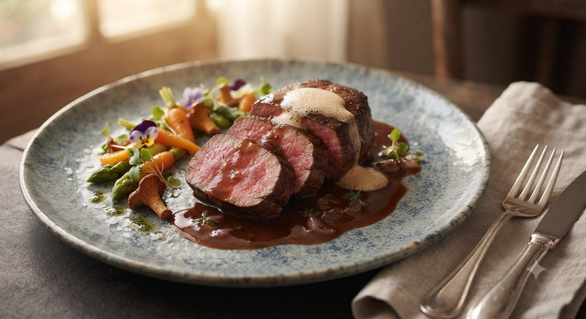
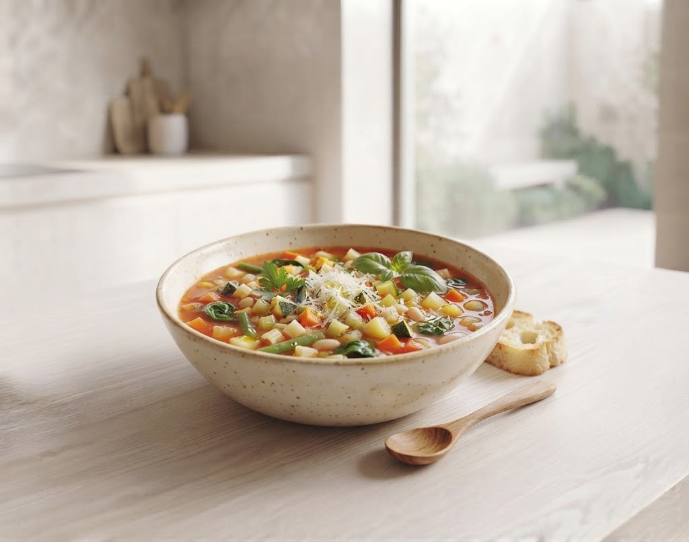
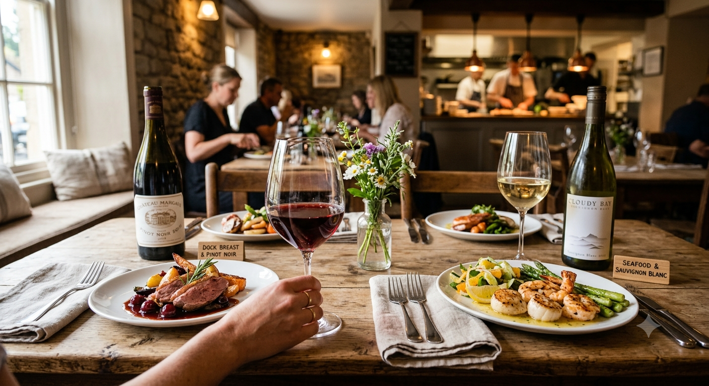
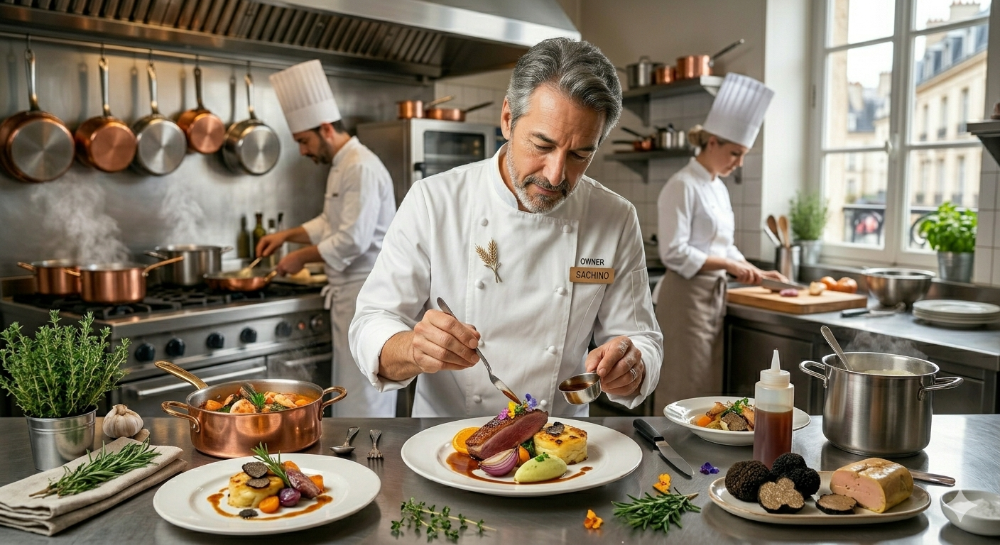

本場前菜のテイクアウト
「自宅でもDue Maniのワインと前菜を楽しみたい」という声から生まれた企画。自家製フォカッチャと季節野菜のグリル、シャルキュトリーの特製ボックス。


Photo: Minestraイチオシ
スープミネストラ
「〇〇シェフの料理が食べたい」と、遠方からもファンが訪れる理由。それは、伝統を守りながらも既成概念にとらわれない小澤智範の「独創性」にあります。素材を活かす引き算、深みを与える足し算。その先にある未知なる美味。
The Experience

Photo: Interior左右2フロアで配慮された居心地
ソムリエ厳選のワインと共に
東北の文脈で綴るイタリア郷土料理
リゾットの概念が変わる食感
Due Maniが提案する、新しい日常とイタリアンの楽しみ方(企画構想中)
「自宅でもDue Maniのワインと前菜を楽しみたい」という声から生まれた企画。自家製フォカッチャと季節野菜のグリル、シャルキュトリーの特製ボックス。
金曜日の「コップワインの会」で人気のナチュラルワインを、自宅へ毎月お届け。店主セレクトの解説カード付きで、おうち時間を贅沢に。
「2人でA・Bランチをシェアしようとしたら、お皿に分けて出してくれました。その心遣いに感動。店内にはアートが点在し、ハイセンスなムードが漂っています。」
「リゾットの概念が変わります。しっかり噛んで味わうリゾットはワインのあてに最高。ベジタリアン対応など細かなオーダーにも応えてくれる貴重な店です。」
店主・小澤智範。1972年、岩手県釜石市生まれ。伝統にとらわれすぎない独自の食材選びと、希少なチーズやワインのペアリングは、地元のみならず県外の美食家からも高い評価を得ています。
盛岡・紺屋町で10年以上。「個人店ならではの温かさと、自由な発想」を大切に、今日もカウンターの向こう側で一皿に魂を込めています。

Photo: Chef住所
〒020-0885 岩手県盛岡市紺屋町7-16
藤原養蜂店と上の橋の間 / 駐車場あり
営業
定休日:月曜日・火曜日
ランチ:水木金日(営業日はお電話にてご確認ください)
※席数が少ないため、事前のご予約をお勧めいたします。
「コップワインの会」
2,000円のおまかせ料理に、自由なコップワインを組み合わせて楽しめるカジュアルな夜。